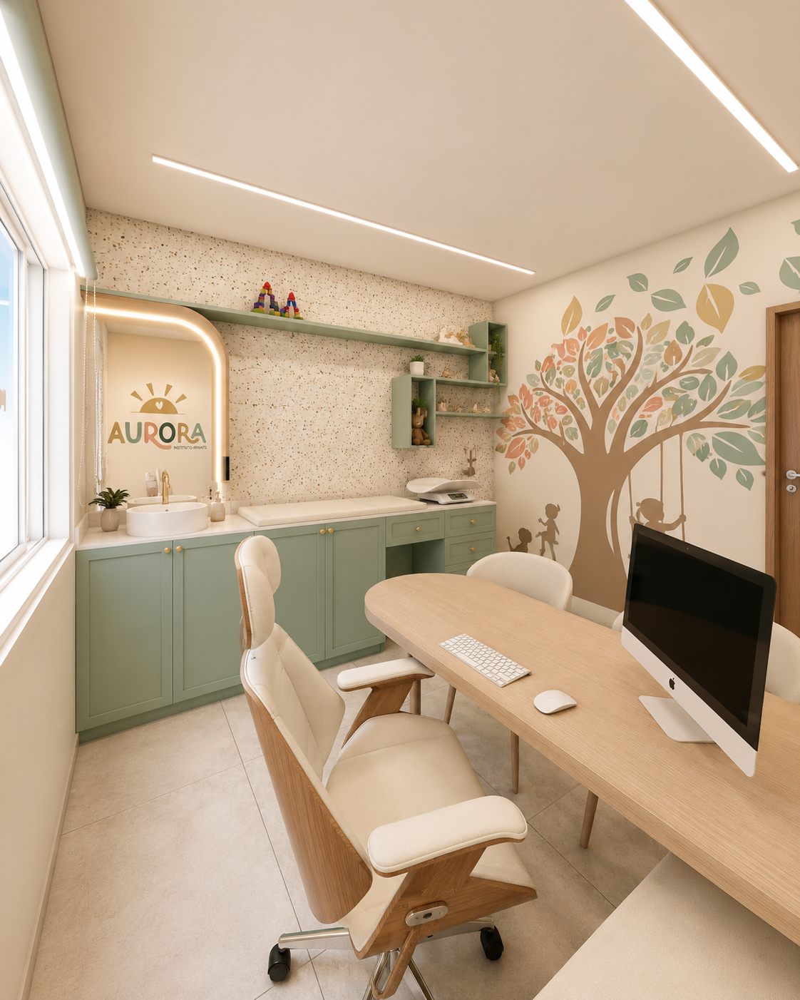

Consulta sem pressa
Aqui, a consulta dura o tempo que você precisar. Nenhuma mãe sai com dúvida porque o próximo paciente está esperando.
Pediatra em Campinas, no Cambuí
Puericultura e desenvolvimento infantil com consultas sem pressa, para a criança ser bem cuidada e para você sair sem nenhuma dúvida.
Sobre mim
Olá! Tudo bem?
Meu nome é Marina Albuquerque, sou pediatra e mãe do Pedro e da Isabela. Há mais de dez anos cuido de crianças aqui em Campinas, e sou formada em Medicina pela PUC‑Campinas, com residência em Pediatria e especialização em Puericultura e Desenvolvimento Infantil, ambas pela UNICAMP.
Mas o que guia o meu trabalho não é o diploma na parede. É a certeza de que toda criança merece ser ouvida com calma, e toda mãe merece sair da consulta mais tranquila do que entrou.
Foi por isso que fundei o Instituto Infantil Aurora: um lugar onde a consulta acontece no tempo que o seu filho precisar, sem pressa e sem fila.
"Eu cuido do seu filho. E cuido de você também."
Estou aqui para acompanhar o seu filho em cada fase, com o cuidado que ele merece.
Quero conhecer pessoalmenteDiferenciais
Aqui, a consulta dura o tempo que você precisar. Nenhuma mãe sai com dúvida porque o próximo paciente está esperando.
Seu filho é o paciente. Mas você também importa. Cada consulta começa com uma pergunta simples: como você está?
Pediatria exclusiva, sem atendimento de adultos. Toda a estrutura, o tempo e o conhecimento dedicados só às crianças.
Especialidades
Acompanhamento completo do crescimento e do desenvolvimento do seu filho, do nascimento até os 10 anos. Rastreio de marcos de desenvolvimento neuromotor e de linguagem em cada consulta, não só peso e altura.
A primeira consulta do bebê, entre o 3º e o 7º dia de vida. Avaliação completa, orientação sobre amamentação e tudo o que os primeiros 30 dias exigem, para você começar essa fase com mais segurança.
Proteção completa, com acesso a todas as vacinas disponíveis para o seu filho e orientação personalizada da Dra. Marina. Sem fila, sem pressa, com espaço para toda pergunta que a vacina costuma gerar.
Consultório

Sem TV, sem tela. Só brinquedos de verdade e um consultório com luz natural e madeira clara. Venha conhecer o espaço com o seu filho antes mesmo da primeira consulta.
Rua Dr. José Inocêncio de Campos, 308, Cambuí, Campinas/SPDepoimentos
Em vez de eu mesma te convencer, prefiro que você leia o que as mães que já foram atendidas aqui têm a dizer.
"Ela me ouviu de verdade. Não ficou olhando para o computador enquanto eu falava."
"Meu filho nunca chorou tanto quanto na outra pediatra. Aqui ele faz birra, mas não chora de medo."
"Eu saí sabendo o que estava acontecendo. Das outras vezes eu saía com receita, mas sem entender nada."
"Ela me disse que eu estava fazendo certo. Eu precisava muito ouvir isso."
"Ela me ligou no dia seguinte para saber como estava. Isso eu nunca tinha visto em pediatra nenhuma."
Dúvidas frequentes
A Dra. Marina não faz consulta corrida. Ela dedica o tempo que for necessário a cada paciente e é especializada em desenvolvimento infantil pela UNICAMP. Muitas mães que estão aqui vieram de outros consultórios justamente por isso: saíam sem entender o que estava acontecendo. Fale com a nossa equipe para conhecer os valores.
O Instituto Infantil Aurora atende principalmente particular. É o que permite à Dra. Marina dedicar o tempo necessário a cada criança, sem as restrições de tempo impostas pelos convênios. Fale com a gente para entender o que faz mais sentido para vocês.
Essa é uma das situações que a Dra. Marina mais lida por aqui. Temos estratégias para a primeira visita que ajudam muito, como deixar a criança só conhecer o consultório antes de qualquer exame. Crianças que entram chorando costumam voltar pedindo para vir.
Com certeza. A Dra. Marina atende muito isso: você traz o histórico que tiver e ela faz uma avaliação completa, sem julgamento do trabalho de outros profissionais. O importante é o melhor para a criança.
A primeira consulta deve ser feita entre o 3º e o 7º dia de vida. É a consulta de alta maternidade, muito importante para avaliar a amamentação, o peso e a adaptação do bebê. Pode agendar antes mesmo do nascimento.
Pré-agendamento
Preencha os dados abaixo ou fale direto pelo WhatsApp. Nossa equipe entra em contato para confirmar o melhor horário para vocês.
Chamar no WhatsApp